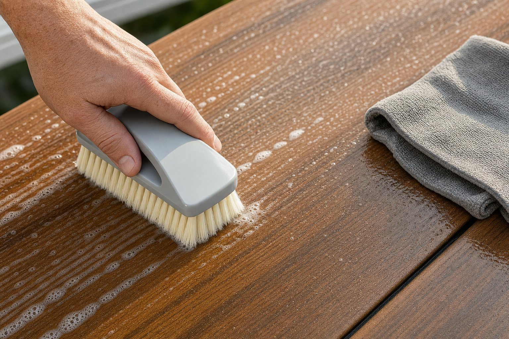

One of the biggest selling points of cellular PVC decking is that it does not need to be sanded, stained, sealed, or repainted. But that does not mean you can ignore it. Dirt, pollen, mildew, grease, and tannin stains from leaves will build up over a season, and some of them will lock in if you let them sit too long. The good news is that cleaning PVC boards is genuinely easy when you use the right approach.

A garden hose and mild dish soap handle 90% of cleaning situations. A soft-bristle brush and a dilute oxygen bleach solution cover the other 10%. You do not need a pressure washer; as the manufacturer, we specifically recommend against them, and you should never need a solvent.
Why PVC boards are easy to clean
AmeriDex boards use a triple-layer construction: a cellular PVC core for rigidity and insulation, an ASA cap layer on all four sides for UV resistance and color retention, and a wood-grain emboss that gives the surface its texture. The ASA cap is what makes cleaning so simple. It is non-porous, which means stains sit on the surface rather than soaking into the board. Mold and mildew have nothing to feed on. And because the color runs through the cap layer rather than sitting on top as a coating, you cannot scrub it away.
This is a meaningful difference from wood, which absorbs moisture and stains into its grain, and from some composite products that use a polymer-wrapped wood-flour core. Those composites can be prone to deep staining because the wood fiber inside absorbs liquids that reach it through minor cap abrasions. With cellular PVC, that failure mode does not exist.
Your regular cleaning routine
For most decks in most climates, a two-step routine twice a year — early spring and late fall — is enough to keep the boards looking new. Add a mid-season rinse if the deck sees heavy use, lives under trees, or is near the coast where salt spray accumulates.
Step 1: Rinse the surface
Start with a plain garden hose on a standard nozzle setting. Work from one end of the deck to the other, rinsing loose debris into the gaps between boards. The gap in an AmeriDex installation also serves as the drainage channel for the Dexerdry TPE seal system, so water flows through exactly the way it is designed to. There is no need to avoid the gaps.
Step 2: Wash with mild soap
Mix a few drops of liquid dish soap — Dawn or any equivalent — into a bucket of warm water. Apply with a soft-bristle brush or a microfiber mop, scrubbing along the grain of the emboss. Work in sections of 8 to 10 feet, then rinse before the soap dries. Dried soap residue can leave a filmy haze, especially on darker colors.
Step 3: Rinse again
Rinse thoroughly after soaping. Pay attention to areas around posts and railings where soap can pool. Any residue left in joints or edges can attract dust and create a grimy line over time.
Tackling tougher stains
Most stains that survive a soap wash fall into a few categories, each with a specific fix. In every case, stick with a garden hose, mild cleaners, and a soft brush. Do not reach for a pressure washer or aggressive tools, even on stubborn stains.

Mold and mildew
Mildew typically appears in shaded corners or areas that stay damp. Mix one cup of oxygen bleach powder (OxiClean or equivalent) into a gallon of warm water. Apply to the affected area, let it dwell for five minutes, scrub lightly with a soft brush, and rinse. Do not use chlorine bleach at concentrations above 3% — it will not damage the PVC itself, but it can cause fading on the ASA cap over repeated use. Oxygen bleach is safer for the surface and for the plants around the deck perimeter.
Grease and cooking oil
Grease from a grill or outdoor kitchen should be cleaned while it is still warm, before it cools and sets. A degreasing dish soap applied directly to the spot and worked in with a soft cloth is usually all that is needed. For hardened grease, a citrus-based degreaser (Zep Citrus or equivalent) applied and rinsed within five minutes works well without touching the cap layer.
Tannin stains from leaves and acorns
Tannins from wet leaves sitting on the deck surface are one of the most common staining complaints across all decking types. The key is speed: do not let leaves sit through a rain event. If staining has already occurred, oxygen bleach solution and a brief dwell time will lift most tannin marks. For stubborn staining, a composite deck cleaner specifically labeled for PVC or synthetic decking (Corte-Clean is widely available) is a reliable option.
Rust and metal marks
Rust transferred from metal furniture legs, screws, or hardware is best treated with a dedicated rust remover formulated for composite or plastic surfaces. Bar Keepers Friend in paste form, applied with a cloth and rinsed quickly, works on light rust marks. Avoid leaving any rust-treating product on the surface longer than the label recommends, as some formulas contain mild acids.
Why we say no to pressure washers
While other deck brands may tell you their boards can be power washed, AmeriDex takes a different position, and it comes from a place most brands cannot speak from. We are the manufacturer, and we work directly with our material suppliers on both lab testing and field performance. We have tested these same cellular PVC and capstock formulations under high pressure, and the result is consistent: a power washer can create micro-tears in the surface that are almost invisible on day one but give water, dirt, and organic material more places to sit, accelerating surface wear over time.
There is a second, less obvious problem. Those same micro-tears disturb the UV-stabilized cap layer that protects the color of the board. When that layer is compromised, the UV stabilizers built into it become unstable and less effective in those spots, creating tiny weak points where sunlight can attack the material more aggressively. Put together, that means a power washer can quietly shorten the life of the UV protection and speed up fading and degradation, even when the deck looks perfectly clean right after you wash it. That is why we recommend simple soap, water, and a soft brush, and nothing more powerful.
Avoiding pressure washers is not just about avoiding visible damage on day one. It is about protecting the UV-stabilized cap layer so your boards keep their color and performance for decades.
Dos and Don'ts at a glance
Do
- Rinse with a garden hose regularly
- Use mild dish soap and a soft-bristle brush
- Use oxygen bleach for mold and mildew
- Clean grease spills while still warm
- Remove leaves before they sit through rain
- Rinse thoroughly after any cleaning product
- Use only a garden hose, bucket, and soft brush to clean
Do Not
- Use undiluted chlorine bleach or bleach above 3%
- Use abrasive scrub pads or steel wool
- Apply oil-based soaps or waxes
- Use acetone, paint thinner, or solvent-based cleaners
- Use a pressure washer of any kind on AmeriDex boards
- Let cleaning products dry on the surface
- Seal, stain, or paint the boards (not needed and will void warranty)
Seasonal maintenance calendar
Beyond cleaning, there are a few quick maintenance checks worth doing once a year. None of them require tools beyond a screwdriver and a garden hose.
- Spring: Full soap wash, inspect the Dexerdry seal strips for any lifted edges or debris packed into the channel, check that the gutter or downspout at the low end of the drainage run is clear.
- Summer: Rinse after cookouts, sweep off pollen and debris before rain events when possible, check under the deck for any standing water which would indicate a blockage in the drainage path.
- Fall: Clear leaves frequently, do a full wash after leaf season ends, inspect fasteners and any visible hardware for rust or looseness.
- Winter: PVC will not crack, rot, or absorb moisture during freeze-thaw cycles. You do not need to cover the deck or treat the boards before winter. Snow can be removed with a plastic shovel — avoid metal shovels that can scratch the cap layer.
The boards do not need to be babied. They just need to be cleaned before problems have time to set.
What you never need to do with PVC decking
Part of understanding how to maintain PVC boards is understanding what you can skip. There is no annual sealing appointment, no staining schedule, no sanding before the next season. You will never need to repaint or refinish the surface because the color and protection are built into the ASA cap from the factory. The 25-year residential warranty on AmeriDex boards covers color fade and structural integrity, not because the boards need to be pampered, but because the material is engineered to hold up without intervention.
If you are comparing this to a pressure-treated wood deck on the same property, the maintenance difference is significant. Wood typically needs to be cleaned, brightened, and sealed every one to two years. Composite products with a wood-flour core need more careful cleaning to avoid abrasion. Cellular PVC with a full ASA cap sits at the low end of the maintenance curve.
Frequently asked questions
Can you pressure wash PVC deck boards?
No. We do not recommend using a pressure washer on AmeriDex boards. While some deck manufacturers say their products can be power washed, we are the manufacturer, and our own testing on these same cellular PVC and UV-stabilized capstock materials shows that high pressure can create micro-tears in the surface. Those micro-tears not only collect water and debris, they also disrupt the UV stabilizers in the cap, creating weak spots where sunlight can accelerate fading and surface breakdown over time. A garden hose, mild soap, and a soft-bristle brush are the cleaning methods we recommend.
What cleaners should I avoid on PVC decking?
Avoid oil-based soaps, chlorine bleach concentrations above 3%, abrasive scrub pads, and any solvent-based cleaners such as acetone, paint thinner, or mineral spirits. These can dull, pit, or discolor the ASA cap layer. When in doubt, oxygen bleach and dish soap are always safe choices.
How often should PVC deck boards be cleaned?
A light rinse every few weeks during the season and a thorough soap wash twice a year — spring and fall — is enough for most AmeriDex decks. Decks under heavy tree cover or near the coast may benefit from a mid-season wash to address tannins or salt spray.
Do PVC deck boards need to be sealed or stained?
No. Cellular PVC boards with an ASA cap layer do not require sealing, staining, or painting. The color and protection are built into the cap itself. Applying a sealer or stain is not needed and could void the warranty — check your warranty documentation before applying any surface coating.
Can mold actually grow on PVC decking?
Mold and mildew cannot feed on PVC itself, but surface mold can grow on organic debris — pollen, dirt, and leaf residue — that settles on the board surface. It looks alarming but cleans up easily with an oxygen bleach solution. The key is not letting organic debris sit on the surface through multiple wet-dry cycles.
Want to see how AmeriDex boards hold up over time? Browse the project gallery for installed decks across different climates and settings, or order free samples to inspect the cap layer yourself before you buy.